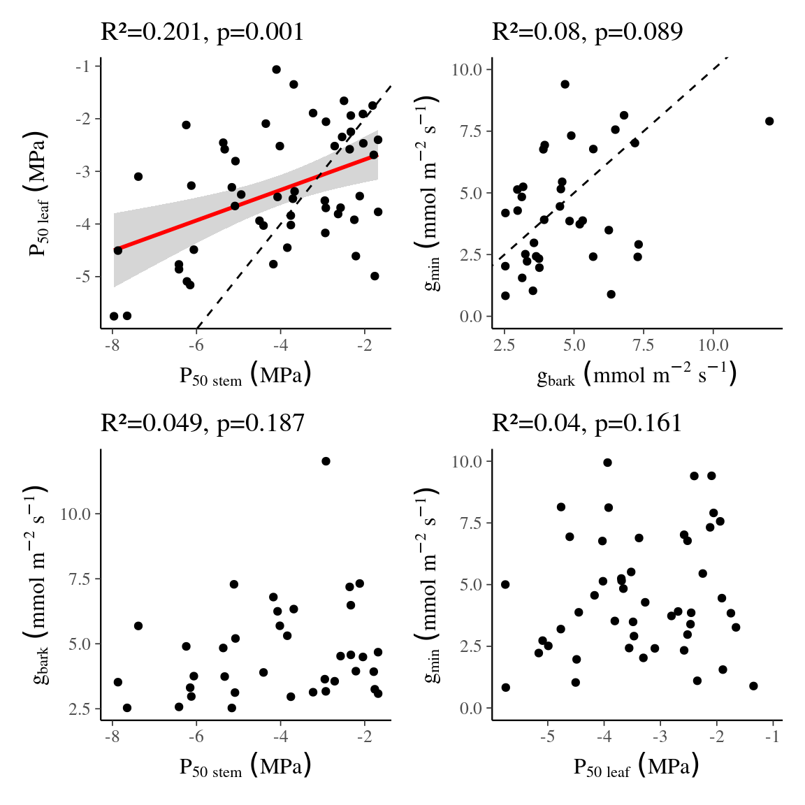

Chapter 3 Tests
sp <- vroom("data/camille/Corrplot_canopy_strategy_traits_raw_19sp.csv") %>%
select(Ptlp, P50leaf, P50stem, SSMleaf, SSMstem, SegP50,
gmin, gbark, `Al:As`, SegLSC_leaf, Pmd_18,
PLCleaf, PLCstem, Mortality) %>%
rename(SegLSC = SegLSC_leaf, Pmd = Pmd_18)
ind <- readxl::read_excel("data/camille/DATABASE_Canopy.xlsx", "All_data_Ind") %>%
separate("Species...1", c("Genus", "Species")) %>%
filter(!is.na(XUTM)) %>%
mutate(SSMleaf = Ptlp_wet - P50leaf,
SSMstem = Ptlp_wet - P50stem) %>%
select(Genus, Species, Ptlp_wet, P50leaf, P50stem, SSMleaf, SSMstem, SegP50,
gmin_leaf, gmin_bark, `Al:As`, SegLSC_leaf, Pmd_18,
PLCleaf_18, PLCstem_18, Mortality) %>%
rename(Ptlp = Ptlp_wet, gmin = gmin_leaf, gbark = gmin_bark,
SegLSC = SegLSC_leaf, Pmd = Pmd_18, PLCleaf = PLCleaf_18,
PLCstem = PLCstem_18)
indxy <- readxl::read_excel("data/camille/DATABASE_Canopy.xlsx", "All_data_Ind") %>%
filter(!is.na(XUTM)) %>%
st_as_sf(coords = c("XUTM", "YUTM"),
crs = '+proj=utm +zone=22 +datum=WGS84 +units=m +no_defs +ellps=WGS84 +towgs84=0,0,0')
ind$HAND <- raster::extract(raster::raster("data/RelativeElevation_1m.tif"), indxy)
rm(indxy)
agr <- readxl::read_excel("data/camille/DATABASE_Canopy.xlsx", "All_data_Ind") %>%
filter(!is.na(XUTM)) %>%
select("Species...1") %>%
separate("Species...1", c("Genus", "Species")) %>%
left_join(vroom("data/species_growth.tsv"))
ind$AGR <- agr$AGRind %>%
gather(variable, value, -Genus, -Species) %>%
na.omit() %>%
ggplot(aes(value)) +
geom_histogram() +
facet_wrap(~ variable, scales = "free") +
ggtitle("Distribution raw")
ind %>%
gather(variable, value, -Genus, -Species) %>%
na.omit() %>%
ggplot(aes(log(abs(value)))) +
geom_histogram() +
facet_wrap(~ variable, scales = "free") +
ggtitle("Distribution log and abs transformed")
g1 <- ggplot(ind, aes(P50stem, P50leaf)) +
geom_smooth(method = "lm") +
geom_abline(linetype = "dashed") +
geom_point() +
ggpubr::stat_cor(aes(label = paste(..p.label..)), label.y.npc = 0.8) +
ggpubr::stat_regline_equation(aes(label = paste(..adj.rr.label..))) +
xlab(expression(P[50~stem]~(MPa))) +
ylab(expression(P[50~leaf]~(MPa)))
g2 <- ggplot(ind, aes(gbark, gmin)) +
geom_smooth(method = "lm") +
geom_abline(linetype = "dashed") +
geom_point() +
ggpubr::stat_cor(aes(label = paste(..p.label..)), label.y.npc = 0.8) +
ggpubr::stat_regline_equation(aes(label = paste(..adj.rr.label..))) +
ylab(expression(g[min]~(mmol~m^{-2}~s^{-1}))) + ylim(0, 10) +
xlab(expression(g[bark]~(mmol~m^{-2}~s^{-1})))
g3 <- ggplot(ind, aes(P50stem, gbark)) +
geom_point() +
ggpubr::stat_cor(aes(label = paste(..p.label..)), label.y.npc = 0.8) +
ggpubr::stat_regline_equation(aes(label = paste(..adj.rr.label..))) +
xlab(expression(P[50~stem]~(MPa))) +
ylab(expression(g[bark]~(mmol~m^{-2}~s^{-1})))
g4 <- ggplot(ind, aes(P50leaf, gmin)) +
geom_point() +
ggpubr::stat_cor(aes(label = paste(..p.label..)), label.y.npc = 0.8) +
ggpubr::stat_regline_equation(aes(label = paste(..adj.rr.label..))) +
ylab(expression(g[min]~(mmol~m^{-2}~s^{-1}))) + ylim(0, 10) +
xlab(expression(P[50~leaf]~(MPa)))
(g1 + g2) / (g3 + g4)
g1 <- ind %>%
select(SSMleaf, SSMstem, SegP50) %>%
gather(variable, value, -SegP50) %>%
na.omit() %>%
ggplot(aes(SegP50, value, col = variable)) +
geom_smooth(method = "lm") +
geom_point() +
scale_color_manual(guide = "none", values = c("darkgreen", "orange")) +
ggpubr::stat_cor(aes(label = paste(..p.label..)), label.y.npc = 0.7) +
ggpubr::stat_regline_equation(aes(label = paste(..adj.rr.label..))) +
xlab(expression(Seg[P50]~(MPa))) +
ylab(expression(SSM[leaf]~or~SSM[stem]~(MPa)))
g2 <- ggplot(ind, aes(SegLSC, gmin)) +
geom_point() +
ggpubr::stat_cor(aes(label = paste(..p.label..)), label.y.npc = 0.8) +
ggpubr::stat_regline_equation(aes(label = paste(..adj.rr.label..))) +
ylab(expression(g[min]~(mmol~m^{-2}~s^{-1}))) + ylim(0, 10) +
xlab(expression(Seg[LSC]~(10^{5}~kg~m^{-1}~Mpa^{-1}~s^{-1})))
g3 <- ind %>%
select(gmin, gbark, `Al:As`) %>%
gather(variable, value, -`Al:As`) %>%
na.omit() %>%
ggplot(aes(value, `Al:As`, col = variable)) +
geom_smooth(method = "lm") +
geom_point() +
scale_color_manual(guide = "none", values = c("darkgreen", "orange")) +
ggpubr::stat_cor(aes(label = paste(..p.label..)), label.y.npc = 0.7) +
ggpubr::stat_regline_equation(aes(label = paste(..adj.rr.label..))) +
ylab("Al:As") +
xlab(expression(g[min]~or~g[bark]~(mmol~m^{-2}~s^{-1})))
g4 <- ind %>%
select(P50leaf, P50stem, `Al:As`) %>%
gather(variable, value, -`Al:As`) %>%
na.omit() %>%
ggplot(aes(value, `Al:As`, col = variable)) +
geom_point() +
scale_color_manual(guide = "none", values = c("darkgreen", "orange")) +
ggpubr::stat_cor(aes(label = paste(..p.label..)), label.y.npc = 0.7) +
ggpubr::stat_regline_equation(aes(label = paste(..adj.rr.label..))) +
ylab("Al:As") +
xlab(expression(P[50~leaf]~or~P[50~stem]~(MPa)))
(g1 + g2) / (g3 + g4)nls(PLCstem ~ SSasymp(abs(P50stem), Asym, R0, lrc), ind) %>%
sjPlot::tab_model()| PL Cstem | |||
|---|---|---|---|
| Predictors | Estimates | CI | p |
| Asym | 0.66 | -4.90 – 6.23 | 0.813 |
| R0 | 216.56 | -85.63 – 518.75 | 0.158 |
| lrc | 0.08 | -0.61 – 0.77 | 0.821 |
| Observations | 86 | ||
| R2 | 0.345 | ||
lm(log(PLCstem) ~ P50stem, ind) %>%
sjPlot::tab_model()| log(PL Cstem) | |||
|---|---|---|---|
| Predictors | Estimates | CI | p |
| (Intercept) | 7.29 | 3.28 – 11.29 | 0.001 |
| P50stem | 2.61 | 1.66 – 3.55 | <0.001 |
| Observations | 86 | ||
| R2 / R2 adjusted | 0.262 / 0.254 | ||
nls(PLCstem ~ SSasymp(SegP50, Asym, R0, lrc), ind) %>%
sjPlot::tab_model()| PL Cstem | |||
|---|---|---|---|
| Predictors | Estimates | CI | p |
| Asym | -9.56 | -39.02 – 19.89 | 0.517 |
| R0 | 11.85 | 6.55 – 17.16 | <0.001 |
| lrc | -1.19 | -2.50 – 0.13 | 0.076 |
| Observations | 49 | ||
| R2 | 0.308 | ||
lm(log(PLCstem) ~ SegP50, ind) %>%
sjPlot::tab_model()| log(PL Cstem) | |||
|---|---|---|---|
| Predictors | Estimates | CI | p |
| (Intercept) | -1.68 | -4.47 – 1.11 | 0.231 |
| SegP50 | -2.84 | -4.49 – -1.19 | 0.001 |
| Observations | 49 | ||
| R2 / R2 adjusted | 0.204 / 0.187 | ||
nls(PLCstem ~ SSasymp(SSMstem, Asym, R0, lrc), ind) %>%
sjPlot::tab_model()| PL Cstem | |||
|---|---|---|---|
| Predictors | Estimates | CI | p |
| Asym | 1.28 | -2.38 – 4.94 | 0.488 |
| R0 | 29.02 | 23.29 – 34.75 | <0.001 |
| lrc | 0.26 | -0.06 – 0.58 | 0.112 |
| Observations | 73 | ||
| R2 | 0.603 | ||
lm(log(PLCstem) ~ SSMstem, ind) %>%
sjPlot::tab_model()| log(PL Cstem) | |||
|---|---|---|---|
| Predictors | Estimates | CI | p |
| (Intercept) | 2.51 | -0.45 – 5.48 | 0.095 |
| SSMstem | -2.68 | -3.81 – -1.56 | <0.001 |
| Observations | 73 | ||
| R2 / R2 adjusted | 0.242 / 0.231 | ||
data <- ind %>%
select(PLCstem, P50stem, SegP50, SSMstem) %>%
gather(variable, value, -PLCstem) %>%
na.omit() %>%
mutate(variable_long = recode(variable,
"P50stem" = "P[50~stem]~(MPa)",
"SegP50" = "Seg[P50]~(MPa)",
"SSMstem" = "SSM[stem]~(MPa)"
))
ggplot(data, aes(value, PLCstem)) +
geom_point() +
facet_wrap(~ variable_long, scales = "free", labeller = label_parsed) +
ggpubr::stat_cor(aes(label = paste(..p.label..)), label.y.npc = 0.1) +
ggpubr::stat_regline_equation(aes(label = paste(..adj.rr.label..)),
label.y.npc = 0.2) +
scale_y_log10() + xlab("") +
geom_smooth(method = "lm")
data <- ind %>%
select(-PLCleaf, -PLCstem, -Pmd, -Mortality, -AGR, -Genus, -Species) %>%
gather(variable, value, -HAND) %>%
na.omit() %>%
mutate(variable_long = recode(variable,
"Ptlp" = "P[tlp]~(MPa)",
"P50leaf" = "P[50~leaf]~(MPa)",
"P50stem" = "P[50~stem]~(MPa)",
"SegP50" = "Seg[P50]~(MPa)",
"SSMleaf" = "SSM[leaf]~(MPa)",
"SSMstem" = "SSM[stem]~(MPa)",
"SegLSC" = "Seg[LSC]~(10^{5}~kg~m^{-1}~Mpa^{-1}~s^{-1})",
"gmin" = "g[min]~(mmol~m^{-2}~s^{-1})",
"gbark" = "g[bark]~(mmol~m^{-2}~s^{-1})"
))
ggplot(data, aes(HAND, abs(value))) +
geom_point() +
facet_wrap(~ variable_long, scales = "free", labeller = label_parsed) +
ggpubr::stat_cor(aes(label = paste(..p.label..)), label.y.npc = 0.1) +
ggpubr::stat_regline_equation(aes(label = paste(..adj.rr.label..)),
formula = y ~ log(x), label.y.npc = 0.3) +
scale_y_log10() +
ylab("") + xlab("HAND (m)")
data <- ind %>%
select(-PLCleaf, -PLCstem, -Pmd, -HAND, -AGR, -Genus, -Species) %>%
gather(variable, value, -Mortality) %>%
na.omit() %>%
mutate(variable_long = recode(variable,
"Ptlp" = "P[tlp]~(MPa)",
"P50leaf" = "P[50~leaf]~(MPa)",
"P50stem" = "P[50~stem]~(MPa)",
"SegP50" = "Seg[P50]~(MPa)",
"SSMleaf" = "SSM[leaf]~(MPa)",
"SSMstem" = "SSM[stem]~(MPa)",
"SegLSC" = "Seg[LSC]~(10^{5}~kg~m^{-1}~Mpa^{-1}~s^{-1})",
"gmin" = "g[min]~(mmol~m^{-2}~s^{-1})",
"gbark" = "g[bark]~(mmol~m^{-2}~s^{-1})"
))
ggplot(data, aes(abs(value), Mortality)) +
geom_point() +
facet_wrap(~ variable_long, scales = "free", labeller = label_parsed) +
ggpubr::stat_cor(aes(label = paste(..p.label..)),
label.y.npc = 0.75, label.x.npc = 0.5) +
ggpubr::stat_regline_equation(aes(label = paste(..adj.rr.label..)),
formula = y ~ log(x),
label.y.npc = 0.95, label.x.npc = 0.5) +
geom_smooth(method = "lm", formula = y ~ log(x),
data = filter(data, variable %in% c("gmin", "gbark"))) +
ylab(expression(Mortality~("%"~year^{-1}))) + xlab("")
data <- ind %>%
select(-PLCleaf, -PLCstem, -Pmd, -HAND, -Mortality, -Genus, -Species) %>%
gather(variable, value, -AGR) %>%
na.omit() %>%
mutate(variable_long = recode(variable,
"Ptlp" = "P[tlp]~(MPa)",
"P50leaf" = "P[50~leaf]~(MPa)",
"P50stem" = "P[50~stem]~(MPa)",
"SegP50" = "Seg[P50]~(MPa)",
"SSMleaf" = "SSM[leaf]~(MPa)",
"SSMstem" = "SSM[stem]~(MPa)",
"SegLSC" = "Seg[LSC]~(10^{5}~kg~m^{-1}~Mpa^{-1}~s^{-1})",
"gmin" = "g[min]~(mmol~m^{-2}~s^{-1})",
"gbark" = "g[bark]~(mmol~m^{-2}~s^{-1})"
))
ggplot(data, aes(abs(value), AGR)) +
geom_point() +
facet_wrap(~ variable_long, scales = "free", labeller = label_parsed) +
ggpubr::stat_cor(aes(label = paste(..p.label..)),
label.y.npc = 0.75, label.x.npc = 0.5) +
ggpubr::stat_regline_equation(aes(label = paste(..adj.rr.label..)),
formula = y ~ log(x),
label.y.npc = 0.95, label.x.npc = 0.5) +
scale_y_log10() +
ylab(expression(Annual~growth~rate~("cm"~year^{-1}))) + xlab("")
ind %>%
select(-Genus, -Species) %>%
cor(use = "pairwise.complete.obs") %>%
corrplot::corrplot(type = "upper",
method = "ellipse",
col = colorRampPalette(c("blue", "white","red"))(100))
ind %>%
select(Genus, Species, HAND) %>%
group_by(Genus, Species) %>%
mutate(Hmed = median(HAND)) %>%
arrange(Hmed) %>%
mutate(type = "Terra firme") %>%
mutate(type = ifelse(Species %in% c("bidentata", "rosea", "globulifera", "melinonii"),
"Generalist", type)) %>%
mutate(type = ifelse(Species %in% c("falcata", "glabra", "hexapetala", "persistens",
"opacum"),
"Bottomland", type)) %>%
ggplot(aes(reorder(paste(Genus, Species), Hmed), HAND, col = type)) +
geom_boxplot() +
coord_flip() +
xlab("") + ylab("HAND (m)") +
theme(axis.text.y = element_text(face = "italic")) +
scale_color_manual(guide = "none", values = c("green", "orange", "firebrick"))